Review
Review in one minute
Review suggests fixes for titles, artists, albums, years, genres and lyrics, one card at a time. Admins open it from the Review icon in the header (it shows the count of open cards), or from Library.
- Read the card: what the song has now, the fix, and why.
- Accept it, change a field first, or Discard it.
- Go on until the round ends; it says what changed.
Every card kind, with examples, how Review learns, and its settings: Review in depth.
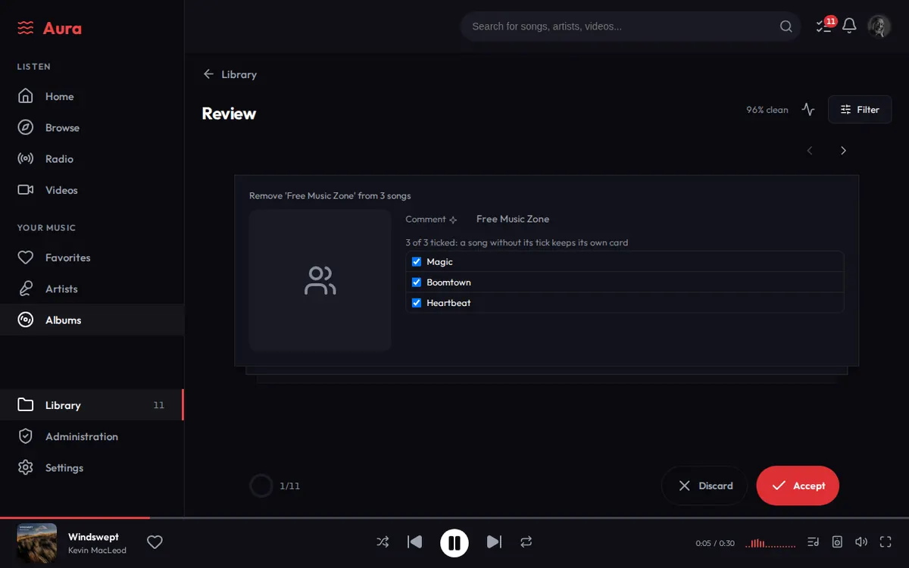
How a card works
Each card is one song (or one group of songs) and one proposed change. It shows the song's folder and file name, its cover, the fields with the fix filled in, and Why: the evidence.
- Accept applies the fix as shown. On a touch screen, swipe right.
- Edit, then Accept: change any field on the card first; Review learns from what you changed.
- Discard drops the card; it isn't proposed again. On a touch screen, swipe left; swipe up skips.
- Name pills under a field offer the other names found in the tags, the file name and the folder: tap one to use it.
- Undo in the message puts the song back as it was.
Cards come in the order that helps most: the songs you play most first, then big albums and artists, kinds mixed. Show filters them by kind; each kind counts its songs and cards.
Rounds and pace
- Pick a round's length: Quick (5), Normal (20), Long (50) or Keep going.
- A round ends with what changed, such as "12 songs fixed, library 73 % clean".
- Quick mode for easy cards (one field, sure): → or a swipe right accepts, ← or left discards.
- Library health, on Review's title row, is the share of songs with no open card.
- Now Playing shows Fix this song when the playing song has a card.
Card kinds, with examples
Real cases from music libraries. Before → after is what the card proposes.
A title from the file name
A ripper's credit or a cut-off tag in the title; the file name has the real one. No suggestion keeps a leading track number.
| Field | Before | After |
|---|---|---|
| File | 02.Chal Chale.mp3 | |
| Title | Chal Chale | |
| Artist | (empty) |
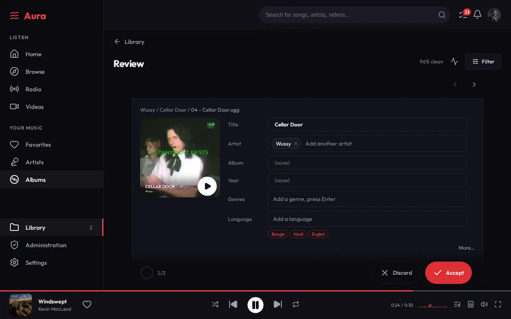
A cut-off title
An open bracket with no closing one is a sign of a cut-off text. Review offers the part before it, or the whole title when the file name has it.
| Field | Before | After |
|---|---|---|
| Title | Javeda Zindagi (Tose Naina Lagey) |
Junk around a real name
Websites, uploader labels, phone numbers and ® © ™ are taken out of albums, artists, genres, composers and comments.
| Field | Before | After |
|---|---|---|
| Album | Jodhaa Akbar |
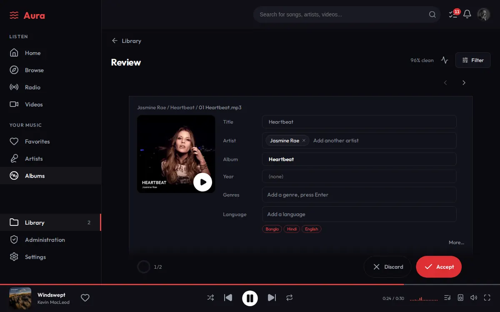
Placeholder titles and albums
"Track 02", "Untitled" and "Unknown Album" count as no name: the file name gives the title, the folder the album.
| Field | Before | After |
|---|---|---|
| File | Rabindra song/kan pete roi.mp3 | |
| Title | kan pete roi | |
| Album | Rabindra song |
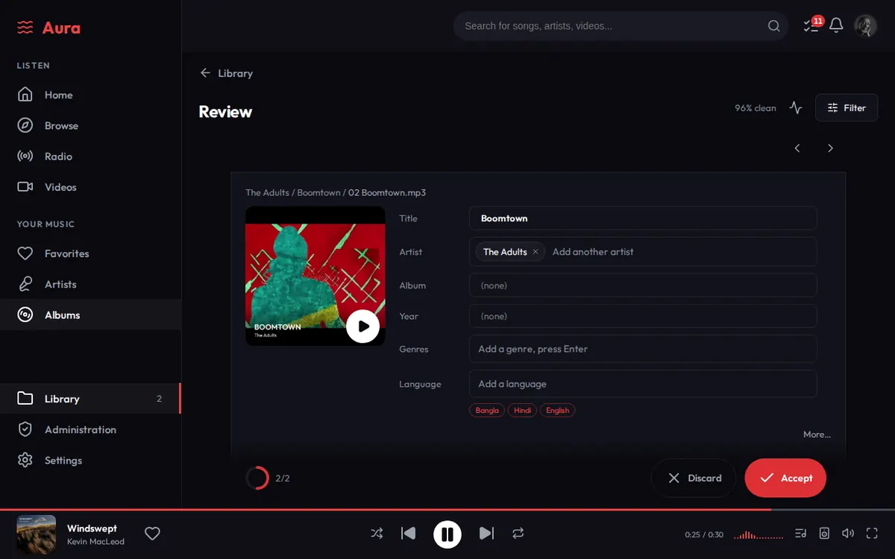
A year in a name
A year at the end or start of an album, folder or file name becomes a year suggestion, and leaves the name.
| Field | Before | After |
|---|---|---|
| Album | Mohabbatein | |
| Year | 2000 |
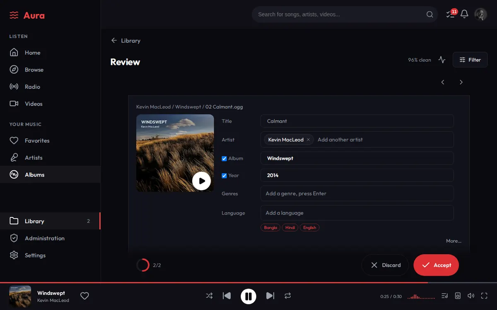
Artist spellings and merges
Two names that differ only in dots, spaces or case are one artist. Names that only sound alike ask for a second sign (shared albums, MusicBrainz).
| Field | Before | After |
|---|---|---|
| Artist | A.R. Rahman |
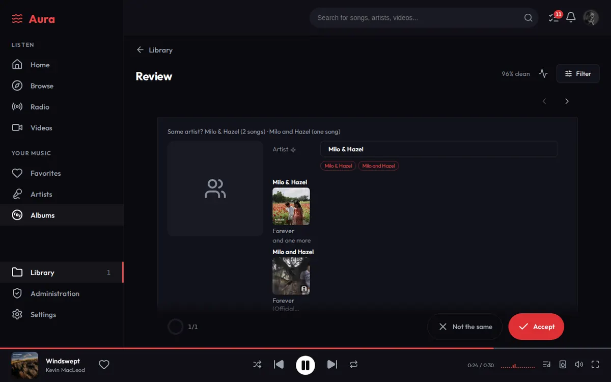
Group cards
The same fix on many songs is one card listing each song before → after, with a tick to leave a song out. A song's fixes on different fields are one card with a tick per field.
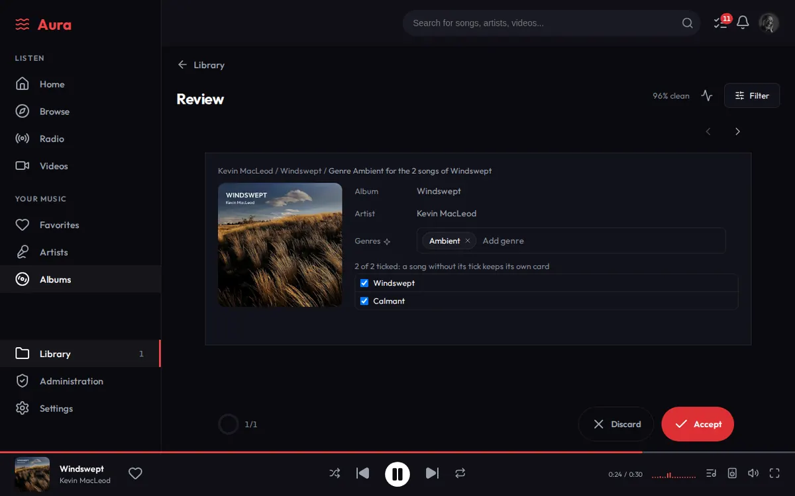
Spam phrases learned
A phrase you take out of three or more songs goes on the library's spam list (Administration → Server) and becomes one card for every song still holding it.
| Field | Before | After |
|---|---|---|
| Comment | (empty) |
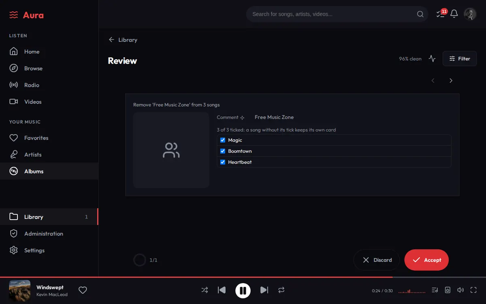
Lyrics found, and wrong lyrics
Lyrics found online for a song without them. A match must be the song by its title and artist; lyrics in a script that doesn't fit the song's language are no match. Wrong lyrics keeps that text from being offered again.
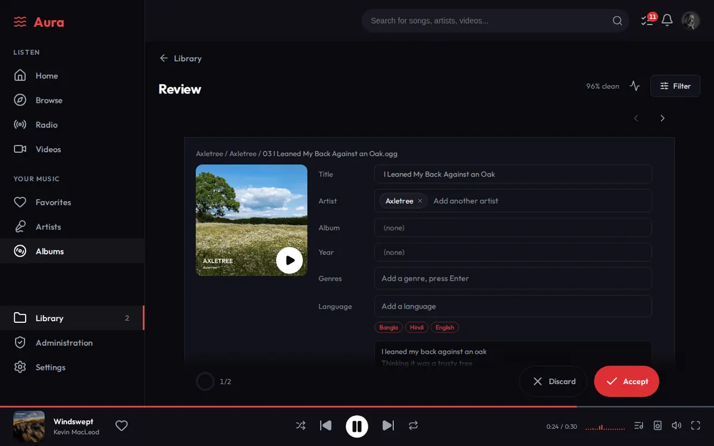
AI genres and languages
The local AI model proposes a genre or language only with evidence: the text from the file it came from, shown on the card, and whether MusicBrainz agrees. Confirmed cards come first.
| Field | Before | After |
|---|---|---|
| Genre | Classical | |
| Why | From the folder and title; MusicBrainz agrees |
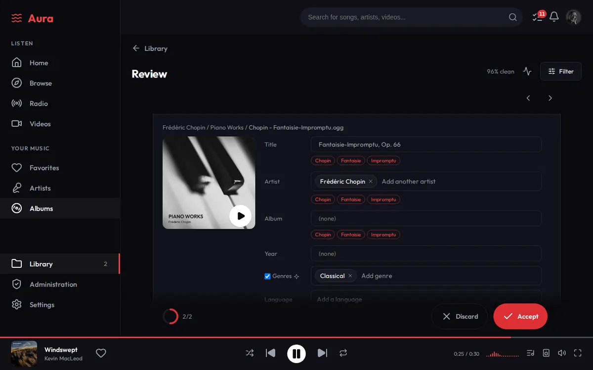
MusicBrainz matches
A matched recording or release proposes the album's year, a song's version or a cleaner name.
| Field | Before | After |
|---|---|---|
| Album year | 2006 |
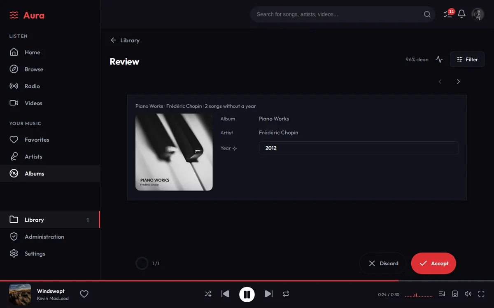
Duplicates
Copies of one song: Accept keeps the best copy and hides the others, Not the same keeps them all.
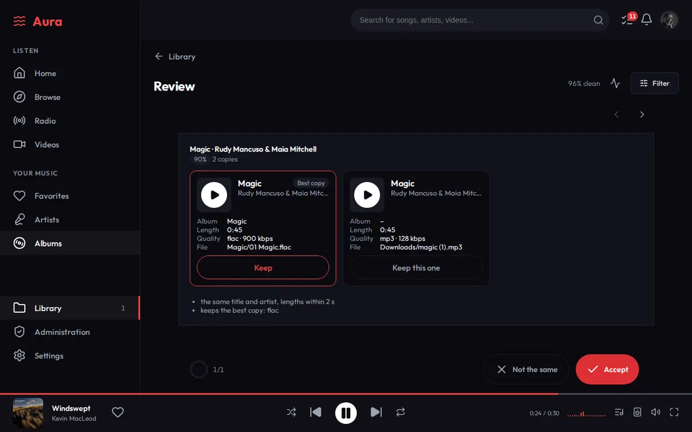
What Review learns
Review reads your decisions and does more of what you do.
- A language you set is proposed for the other songs of that folder.
- A genre you remove from a folder's songs is removed from the rest.
- Your artist spellings are used from then on.
- Phrases you take out of three or more songs become spam phrases.
- The AI model gets a few of your own corrections as examples with each request; nothing leaves the server.
What Review learned lists every kind with how often you accept it as it is.
Apply by itself, Undo and backups
- In What Review learned, set a kind to Apply by itself (suggested when you accept it as it is 95 % of the time) or Ask me.
- Fixes applied by themselves are listed under Applied by itself, with Undo per fix and per group.
Note Fixes from the web, MusicBrainz or the AI that rewrite a title, artist or album, merges, splits and duplicates always ask.
Start over
- Start Review over asks first and offers Download a backup.
- To go back, Administration → Server restores that backup, with the changes and their Undo.
Rules, web lookups and the local AI model
- Rules run always: track numbers, junk, placeholders, years, spellings.
- Online lookup (MusicBrainz) asks MusicBrainz for names and years and looks for lyrics. It sends only song, artist and album names.
- Local AI model reads a song's file name, folder and tags on your machine, when rules and lookups can't settle it.
Set up the local AI model
- Start it with the compose file's
aiprofile (about 2 GB, fetched once):docker compose --profile ai up -d - In Administration → Server, set Local AI model address to
http://ai:11434and pick the Local AI model (qwen2.5:3bsuits most). - For More like this and search by meaning, set the Embedding model too. New in 1.5 alpha
Tip Each source has a switch in Administration → Features: Metadata cleanup, Online lookup (MusicBrainz) and Local AI model. Review shows its background pass behind the status button: songs left, the next round, and when it stopped at its limit.